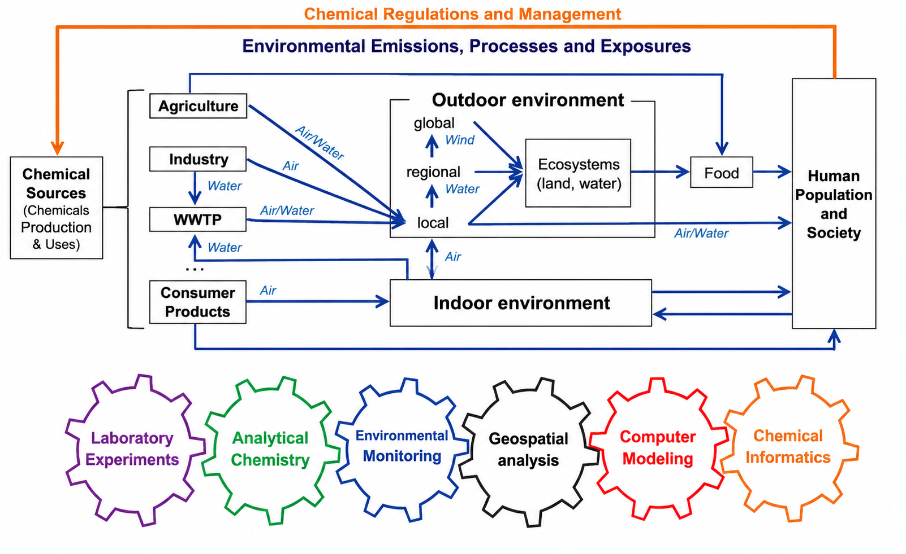

Research Interests

I am broadly interested in analytical chemistry, environmental monitoring, and data-driven approaches for understanding organic contaminants in real-world systems.
- Environmental sources, processes, and impacts of organic contaminants
- Human exposure to organic contaminants in everyday environments
- Long-range transport and long-term fate of persistent organic pollutants
- Environmental monitoring and chemical characterization using high-resolution mass spectrometry
- Environmental data analysis and computational modeling
- Models that simulate environmental processes, exposures, and contaminant impacts